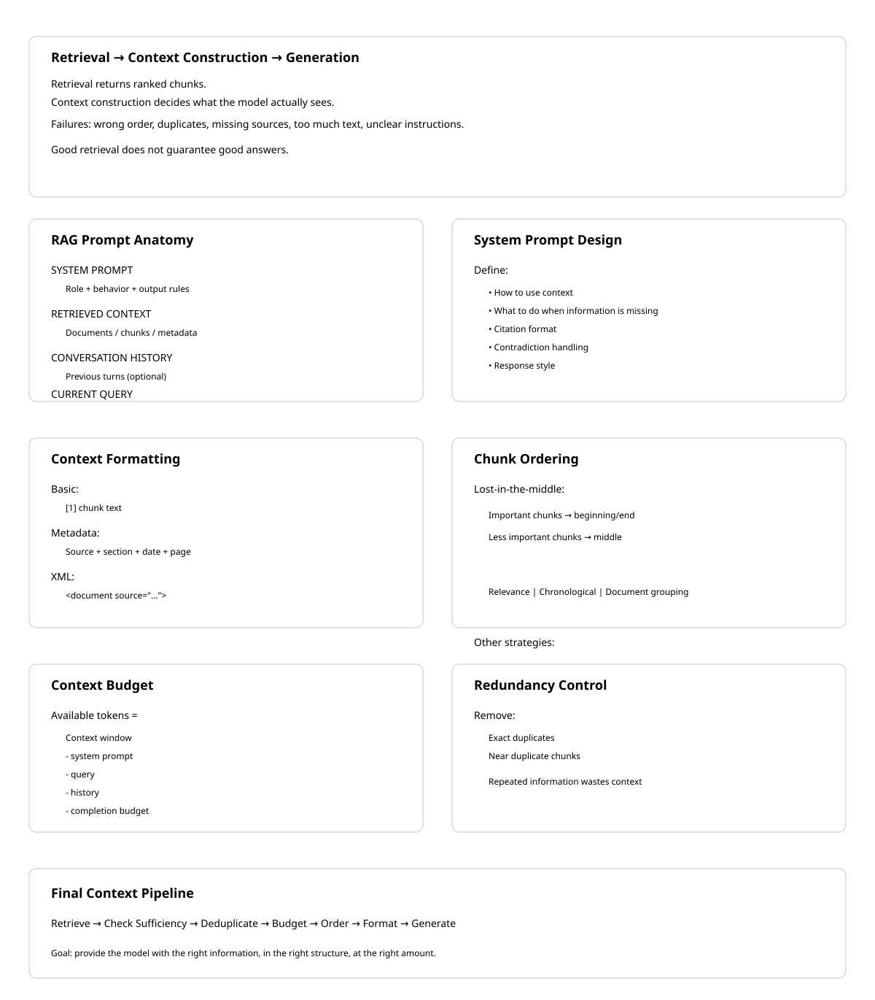

18 Context Construction
The canonical question for this chapter: You have retrieved and reranked your chunks. Before generating a single token of the response, how do you assemble those chunks into a prompt that ensures the language model uses them correctly?
18.1 The gap between retrieval and generation
Retrieval produces a ranked list of relevant chunks while generation requires a single, coherent prompt. The space between these two (context construction) is where many RAG systems silently fail.
A system can have excellent retrieval (Recall@10 above 0.95) and an excellent language model, and still produce poor answers because the context was assembled carelessly. The model receives information in a confusing order, with duplicate content, missing attribution, insufficient instruction about what to do, or more text than it can effectively use.
Context construction is not just formatting it is also the engineering of what the language model actually sees which determines what it can reason about, what it will believe, and what kind of response it will produce. The content being assembled was not written by a human with a sense of narrative flow, it was retrieved mechanically and must be made coherent programmatically.
This chapter covers every decision in context construction: what to include, in what order, how much, with what framing, and how to verify that the model is actually using what you provide.
18.2 Anatomy of a RAG prompt
A complete RAG prompt has multiple components, each serving a specific purpose:
┌─────────────────────────────────────────────────────────┐
│ SYSTEM PROMPT │
│ Role definition, behavior instructions, output format │
├─────────────────────────────────────────────────────────┤
│ RETRIEVED CONTEXT │
│ The chunks that inform the answer │
├─────────────────────────────────────────────────────────┤
│ CONVERSATION HISTORY (if multi-turn) │
│ Prior turns in the current conversation │
├─────────────────────────────────────────────────────────┤
│ CURRENT QUERY │
│ The user's actual question │
└─────────────────────────────────────────────────────────┘Each component has design decisions that affect answer quality and none of them are optional for a production RAG system.
18.3 The system prompt
The system prompt establishes the model’s role, instructs it how to use the retrieved context, and defines the output format.
18.3.1 Baseline RAG system prompt
You are a helpful assistant. Answer questions based on the provided context.
If the context does not contain enough information to answer the question,
say so clearly rather than speculating.This is functional but minimal. It does not tell the model what kind of context it is receiving (document excerpts? structured data?), how authoritative the context is (always trust it? verify it?), how to cite sources, what to do when context chunks contradict each other, or how long or detailed the response should be.
18.3.2 Production RAG system prompt
You are a technical documentation assistant for Isengard Corp's API platform.
CONTEXT USAGE:
- Answer questions using only the provided documentation excerpts
- If the excerpts do not contain sufficient information, state clearly:
"I don't have enough information in the provided documentation to answer this."
- Do not use general knowledge to supplement the context, users need
answers specific to Isengard Corp's implementation
- When information spans multiple excerpts, synthesize them coherently
CITATIONS:
- Reference the source document for any specific claim
- Format citations as [Source: {document_title}, Section: {section}]
- If two excerpts contradict each other, note both and flag the discrepancy
RESPONSE FORMAT:
- Lead with the direct answer before any supporting explanation
- Use code examples from the documentation when relevant
- Keep responses concise, users are developers reading quickly
CONFIDENCE:
- Distinguish between "this documentation states X" and "this suggests X"
- If the documentation is ambiguous, say soThe additional specificity addresses failure modes seen in practice: models that supplement retrieved context with hallucinated general knowledge (see discussion of parametric memory as noise), models that do not cite sources, models that pick one side when context contradicts itself, and models that bury the answer in preamble.
18.3.3 Domain-specific instructions
For specialized domains, the system prompt must address domain-specific behaviors. Legal RAG: “Do not provide legal advice. Present the relevant statutory text and precedent, then recommend the user consult a licensed attorney.” Medical RAG: “Present information from clinical guidelines. Include the evidence level when indicated. Always recommend consulting a healthcare provider.” Financial RAG: “Present the relevant regulations and data and never provide investment advice. Note the effective date of any regulation cited.” Code assistant RAG: “When presenting code from documentation, preserve it exactly as written. Note the SDK or language version it applies to.”
18.4 Retrieved context formatting
How you format the retrieved chunks in the prompt significantly affects model behavior. The model attends differently to differently structured context.
18.4.1 Basic formatting
def format_chunks_basic(chunks: list[dict]) -> str:
formatted = []
for i, chunk in enumerate(chunks, 1):
formatted.append(f"[{i}] {chunk['text']}")
return "\n\n".join(formatted)[1] The default token expiration is 3600 seconds. This can be configured
via the token_ttl parameter in the authentication settings.
[2] Authentication tokens are invalidated immediately upon user logout
regardless of the remaining TTL.Simple, readable, works for most cases.
18.4.2 Metadata-enriched formatting
Include source information to enable citation and help the model assess credibility:
def format_chunks_with_metadata(chunks: list[dict]) -> str:
formatted = []
for i, chunk in enumerate(chunks, 1):
source_info = []
if chunk.get('document_title'):
source_info.append(f"Document: {chunk['document_title']}")
if chunk.get('section'):
source_info.append(f"Section: {chunk['section']}")
if chunk.get('page'):
source_info.append(f"Page: {chunk['page']}")
if chunk.get('last_updated'):
source_info.append(f"Updated: {chunk['last_updated']}")
header = f"[Source {i}: {' | '.join(source_info)}]" if source_info else f"[{i}]"
formatted.append(f"{header}\n{chunk['text']}")
return "\n\n---\n\n".join(formatted)[Source 1: Document: API Reference v3.2 | Section: Authentication | Updated: 2024-03]
The default token expiration is 3600 seconds. This can be configured
via the token_ttl parameter in the authentication settings.
---
[Source 2: Document: API Reference v3.2 | Section: Session Management | Updated: 2024-03]
Authentication tokens are invalidated immediately upon user logout
regardless of the remaining TTL.The model can now cite sources specifically and has recency information to assess which source is more current if sources conflict.
18.4.3 XML-delimited formatting
XML tags provide unambiguous delimiters that are reliable even when chunk content contains newlines, code blocks, or other text that might confuse delimiter-based parsing:
def format_chunks_xml(chunks: list[dict]) -> str:
formatted = []
for i, chunk in enumerate(chunks, 1):
attrs = []
if chunk.get('document_title'):
attrs.append(f'source="{chunk["document_title"]}"')
if chunk.get('section'):
attrs.append(f'section="{chunk["section"]}"')
attr_str = " " + " ".join(attrs) if attrs else ""
formatted.append(
f'<document index="{i}"{attr_str}>\n{chunk["text"]}\n</document>'
)
return "\n\n".join(formatted)<document index="1" source="API Reference v3.2" section="Authentication">
The default token expiration is 3600 seconds. This can be configured
via the token_ttl parameter in the authentication settings.
</document>
<document index="2" source="API Reference v3.2" section="Session Management">
Authentication tokens are invalidated immediately upon user logout
regardless of the remaining TTL.
</document>18.4.4 Relevance score inclusion
Including relevance scores can help the model calibrate confidence:
def format_chunks_with_scores(chunks: list[tuple[dict, float]]) -> str:
formatted = []
for i, (chunk, score) in enumerate(chunks, 1):
confidence = "High" if score > 0.85 else "Medium" if score > 0.6 else "Low"
formatted.append(
f"[{i}] (Relevance: {confidence})\n{chunk['text']}"
)
return "\n\n".join(formatted)If scores are noisy (as embedding similarities often are), exposing them to the model can cause it to underweight actually relevant chunks that scored slightly lower. Include scores only when they are well-calibrated. —
18.5 Ordering retrieved chunks
The order in which chunks appear in the context window matters and it is not in the direction most people assume.
18.5.1 The lost-in-the-middle effect, revisited
Language models systematically underperform when relevant information sits in the middle of a long context. Here it becomes an active design constraint rather than a passive fact: the most important chunks should not be placed in the middle of the assembled context.
Context positions by model attention:
HIGH ──────────────────────────
↑ ↑
Beginning End
↓ MIDDLE: lowest attention ↓
LOW ──────────────────────────18.5.2 Ordering strategies
By relevance score (naive) places the highest-scoring chunk first. This puts the most relevant content at the beginning but potentially leaves the second-most-relevant chunk buried in the middle if there are many chunks.
Reverse relevance order places the highest-scoring chunk last, exploiting the recency bias of many models, information near the end of the context is often well-attended.
Lost-in-the-middle optimized ordering places the most relevant chunks at the beginning and end, less relevant chunks in the middle:
def order_chunks_for_attention(
chunks: list[tuple[dict, float]], # (chunk, relevance_score) sorted by score
) -> list[dict]:
"""
Place highest-relevance chunks at beginning and end.
Fill middle with lower-relevance chunks.
"""
if len(chunks) <= 2:
return [chunk for chunk, _ in chunks]
sorted_chunks = [chunk for chunk, _ in sorted(chunks, key=lambda x: x[1], reverse=True)]
result = []
toggle = True
for chunk in sorted_chunks:
if toggle:
result.insert(0, chunk)
else:
result.append(chunk)
toggle = not toggle
return resultChronological ordering suits documents with temporal structure (news articles, changelogs, meeting notes) and the model can reason “the most recent document says X, the earlier document said Y” only if ordering is chronological.
Document-coherent grouping keeps chunks from the same document together rather than interleaving them with chunks from other documents, preserving intra-document coherence and making citations cleaner:
def group_by_document(chunks: list[dict]) -> list[dict]:
"""
Group chunks from the same document together,
ordering groups by the highest-scoring chunk in each group.
"""
from collections import defaultdict
groups = defaultdict(list)
for chunk in chunks:
doc_id = chunk.get('document_id', chunk.get('source', 'unknown'))
groups[doc_id].append(chunk)
def group_score(doc_id):
return max(c.get('relevance_score', 0) for c in groups[doc_id])
ordered_groups = sorted(groups.keys(), key=group_score, reverse=True)
result = []
for doc_id in ordered_groups:
result.extend(groups[doc_id])
return result18.6 Context window budget management
The context window has a fixed size and managing what fits requires explicit token accounting.
18.6.1 Budget allocation
def allocate_context_budget(
model_context_window: int, # e.g., 128000 tokens
system_prompt_tokens: int, # e.g., 500 tokens
query_tokens: int, # e.g., 50 tokens
conversation_history_tokens: int, # e.g., 2000 tokens
max_completion_tokens: int, # e.g., 1000 tokens
safety_margin: float = 0.95, # don't fill to 100%
) -> int:
"""Returns the number of tokens available for retrieved context."""
reserved = (
system_prompt_tokens
+ query_tokens
+ conversation_history_tokens
+ max_completion_tokens
)
available = int(model_context_window * safety_margin) - reserved
return max(0, available)
# Example
context_budget = allocate_context_budget(
model_context_window=128000,
system_prompt_tokens=500,
query_tokens=50,
conversation_history_tokens=2000,
max_completion_tokens=1000,
)
# context_budget ≈ 118,175 tokens for retrieved contextThe safety margin (5–10%) prevents edge cases where token counting is slightly off from causing the request to fail.
18.6.2 Filling the budget
Select chunks in relevance order until the budget is filled:
def select_chunks_within_budget(
ranked_chunks: list[dict],
token_budget: int,
tokenizer,
) -> list[dict]:
selected = []
tokens_used = 0
for chunk in ranked_chunks:
chunk_tokens = len(tokenizer.encode(chunk['text']))
chunk_tokens_with_overhead = chunk_tokens + 50 # headers, delimiters
if tokens_used + chunk_tokens_with_overhead <= token_budget:
selected.append(chunk)
tokens_used += chunk_tokens_with_overhead
else:
break # usually better to skip than truncate a chunk mid-thought
return selectedFor smaller context windows (8k, 16k), budget management is critical and you may only fit 3–5 chunks. For large context windows (128k+), it becomes less constraining, but long contexts have their own failure modes: reduced attention precision, higher cost, and longer TTFT.
18.6.3 Handling conversation history
In a multi-turn conversation, prior turns compete with retrieved context for the same budget. Strategies for managing this tradeoff: a fixed history window (keep only the last N turns, simple, predictable budget), summarization of older turns (use the model to compress turns that fall outside the window), or selective history (identify which prior turns are actually relevant to the current query and include only those).
def compress_conversation_history(
history: list[dict],
max_history_tokens: int,
tokenizer,
llm,
) -> list[dict]:
total_tokens = sum(len(tokenizer.encode(msg['content'])) for msg in history)
if total_tokens <= max_history_tokens:
return history
cutoff = len(history) // 2
old_turns, recent_turns = history[:cutoff], history[cutoff:]
old_text = "\n".join(f"{m['role']}: {m['content']}" for m in old_turns)
summary = llm.complete(
f"Summarize this conversation excerpt in 2-3 sentences:\n{old_text}"
)
summary_message = {"role": "system", "content": f"[Earlier conversation summary]: {summary}"}
return [summary_message] + recent_turns18.7 Deduplication and redundancy handling
Multiple retrieved chunks may contain the same information. Passing duplicates wastes context window space and can cause the model to over-weight the duplicated information, a specific instance of the general principle that repetition biases generation.
18.7.1 Exact deduplication
def deduplicate_chunks(chunks: list[dict]) -> list[dict]:
seen_hashes = set()
unique_chunks = []
for chunk in chunks:
content_hash = hashlib.sha256(chunk['text'].encode()).hexdigest()
if content_hash not in seen_hashes:
seen_hashes.add(content_hash)
unique_chunks.append(chunk)
return unique_chunks18.7.2 Near-duplicate detection
Chunks from overlapping sources (the same document crawled from multiple URLs, a document and its summary) may be semantically identical without being textually identical:
def remove_near_duplicates(
chunks: list[dict],
embeddings: np.ndarray,
similarity_threshold: float = 0.95,
) -> list[dict]:
"""Remove chunks that are near-duplicates of already-selected chunks.
Assumes chunks are ordered by relevance (most relevant first)."""
selected_indices = []
selected_embeddings = []
for i, (chunk, embedding) in enumerate(zip(chunks, embeddings)):
if not selected_embeddings:
selected_indices.append(i)
selected_embeddings.append(embedding)
continue
sims = cosine_similarity([embedding], selected_embeddings)[0]
if sims.max() < similarity_threshold:
selected_indices.append(i)
selected_embeddings.append(embedding)
return [chunks[i] for i in selected_indices]Near-duplicate removal matters most for web-scraped corpora where the same content appears on many pages, documents with headers and footers appearing in many chunks, and FAQ-style content where similar questions have near- identical answers.
18.8 Handling contradictions in retrieved context
A well-curated corpus rarely contradicts itself but a real-world corpus documentation with multiple versions, policies that have changed over time, information from different departments frequently does.
When retrieved chunks contradict each other, naive context construction passes the contradiction to the model without flagging it. The model either picks one answer arbitrarily, hedges without clearly indicating the contradiction, or fails to notice it at all.
18.8.1 Detecting contradictions at context construction time
def detect_potential_contradictions(
chunks: list[dict],
query: str,
llm,
) -> list[tuple[int, int, str]]:
"""Check for potential contradictions between chunk pairs.
Returns list of (chunk_i, chunk_j, explanation) tuples."""
contradictions = []
for i in range(len(chunks)):
for j in range(i+1, len(chunks)):
prompt = f"""Do these two passages contradict each other on any point
relevant to the query? If yes, explain the contradiction in one sentence.
If no, respond with "NO CONTRADICTION".
Query: {query}
Passage 1: {chunks[i]['text'][:500]}
Passage 2: {chunks[j]['text'][:500]}"""
response = llm.complete(prompt).strip()
if "NO CONTRADICTION" not in response.upper():
contradictions.append((i, j, response))
return contradictionsThis approach requires O(n²) LLM calls for n chunks, expensive for large candidate sets. Use it selectively for high-stakes queries or when the corpus is known to have version-specific content.
18.8.2 Flagging contradictions in the prompt
def format_context_with_contradiction_flags(
chunks: list[dict],
contradictions: list[tuple[int, int, str]],
) -> str:
formatted_chunks = format_chunks_with_metadata(chunks)
if not contradictions:
return formatted_chunks
contradiction_notes = "\n".join([
f"Note: Sources {i+1} and {j+1} may conflict: {explanation}"
for i, j, explanation in contradictions
])
return f"{formatted_chunks}\n\n[CONTEXT NOTES]\n{contradiction_notes}"Explicitly flagging contradictions causes the model to acknowledge them in its response rather than silently picking one side.
18.9 Query placement and framing
The placement and phrasing of the user query relative to the context affects how the model processes both.
Context then query (standard for most LLMs) reads context before seeing the query, processing it without knowing specifically what to look for.
Query then context putting the question first, then the relevant documentation, then the instruction to answer based on it above, lets the model know what to look for before it reads the context, potentially improving attention to relevant sections. Some models handle this better; others expect context before query. Evaluate empirically for your specific model.
18.9.1 Explicit instruction placement
Instructions about how to use the context are more effective when placed immediately adjacent to the context:
def build_rag_prompt(
system_prompt: str,
context_chunks: list[dict],
query: str,
conversation_history: list[dict] = None,
) -> list[dict]:
formatted_context = format_chunks_xml(context_chunks)
messages = [{"role": "system", "content": system_prompt}]
if conversation_history:
messages.extend(conversation_history[:-1])
user_content = f"""Based on the following documentation excerpts, answer the question.
If the excerpts don't contain the answer, say so.
<documentation>
{formatted_context}
</documentation>
Question: {query}"""
messages.append({"role": "user", "content": user_content})
return messages18.10 Context sufficiency checking
Before passing context to the generation model, check whether it actually contains information relevant to the query. If the retrieved context is insufficient, a well-configured RAG system should say so rather than hallucinating.
18.10.1 Lightweight sufficiency check
def check_context_sufficiency(
query: str,
context_chunks: list[dict],
embedding_model,
min_relevance_threshold: float = 0.4,
) -> bool:
"""Quick check: is any retrieved chunk sufficiently similar to the query
to likely contain useful information?"""
if not context_chunks:
return False
query_embedding = embedding_model.encode(
f"query: {query}", normalize_embeddings=True
)
for chunk in context_chunks:
chunk_embedding = embedding_model.encode(
f"passage: {chunk['text']}", normalize_embeddings=True
)
similarity = float(np.dot(query_embedding, chunk_embedding))
if similarity >= min_relevance_threshold:
return True
return FalseIf this returns False, respond with a pre-defined “insufficient context” response rather than sending low-quality context to the generation model.
18.10.2 LLM-based sufficiency check
For higher accuracy at the cost of an additional LLM call:
def llm_check_sufficiency(query: str, context: str, llm) -> bool:
prompt = f"""Does the following context contain sufficient information
to answer the question? Respond with only YES or NO.
Question: {query}
Context:
{context[:2000]}"""
response = llm.complete(prompt).strip().upper()
return response.startswith("YES")18.11 Structured context for structured queries
Some queries are inherently structured, they ask about specific fields, want tabular comparison, or require numerical computation. Unstructured text chunks are often the wrong format for these queries.
18.11.1 Tabular context
For queries comparing multiple options or entities:
def format_tabular_context(
entities: list[str],
attribute_chunks: dict[str, dict[str, str]], # entity → attribute → value
) -> str:
all_attributes = set()
for entity_data in attribute_chunks.values():
all_attributes.update(entity_data.keys())
attributes = sorted(all_attributes)
header = "| Attribute | " + " | ".join(entities) + " |"
separator = "|---|" + "---|" * len(entities)
rows = []
for attr in attributes:
row_values = [
attribute_chunks.get(entity, {}).get(attr, "N/A")
for entity in entities
]
rows.append(f"| {attr} | " + " | ".join(row_values) + " |")
return "\n".join([header, separator] + rows)For the query “compare the pricing of the Starter and Enterprise plans,” a tabular context is dramatically more useful than separate text chunks about each plan.
18.11.2 Key-value context
For queries asking about specific properties of a specific entity:
def format_entity_context(entity_data: dict, entity_name: str) -> str:
lines = [f"# {entity_name}"]
for key, value in entity_data.items():
if isinstance(value, list):
lines.append(f"**{key}**: {', '.join(str(v) for v in value)}")
else:
lines.append(f"**{key}**: {value}")
return "\n".join(lines)18.12 Citation and attribution in the response
Well-constructed context enables accurate citation in the response. Encourage citation by including source identifiers in the context (as shown above), instructing the model to cite in the system prompt, and verifying citations after generation.
18.12.1 Post-generation citation verification
def verify_citations(
response: str,
context_chunks: list[dict],
) -> dict:
"""Check that cited sources exist in the context."""
import re
citations = re.findall(r'\[Source (\d+)[^\]]*\]', response)
results = {
"total_citations": len(citations),
"valid_citations": 0,
"invalid_citations": [],
}
for citation_num in citations:
idx = int(citation_num) - 1
if 0 <= idx < len(context_chunks):
results["valid_citations"] += 1
else:
results["invalid_citations"].append(citation_num)
return resultsHallucinated citations (where the model references “[Source 7]” when only 5 sources were provided) are a specific failure mode that citation verification catches. Log these as retrieval quality signals: if the model needs a source that was not retrieved, the retrieval stage is missing relevant content, and this signal should feed back into the retrieval evaluation process.
18.13 Putting it all together
A complete context construction function, drawing on every technique in this chapter:
def construct_rag_context(
query: str,
ranked_chunks: list[dict], # already retrieved and re-ranked
conversation_history: list[dict],
system_prompt: str,
tokenizer,
embedding_model,
model_config: dict,
) -> list[dict]:
"""Full context construction pipeline.
Returns a messages list ready to send to the generation model."""
# 1. Check context sufficiency
if not check_context_sufficiency(query, ranked_chunks, embedding_model):
return build_no_context_response_prompt(query, system_prompt)
# 2. Deduplicate
chunks = remove_near_duplicates(
ranked_chunks, compute_embeddings(ranked_chunks, embedding_model)
)
# 3. Allocate token budget
context_budget = allocate_context_budget(
model_context_window=model_config['context_window'],
system_prompt_tokens=count_tokens(system_prompt, tokenizer),
query_tokens=count_tokens(query, tokenizer),
conversation_history_tokens=count_tokens(conversation_history, tokenizer),
max_completion_tokens=model_config['max_completion_tokens'],
)
# 4. Select chunks within budget
chunks = select_chunks_within_budget(chunks, context_budget, tokenizer)
# 5. Order for attention optimization
chunks = order_chunks_for_attention(
[(chunk, chunk.get('relevance_score', 0)) for chunk in chunks]
)
# 6. Group by document for coherence
chunks = group_by_document(chunks)
# 7. Format context
formatted_context = format_chunks_xml(chunks)
# 8. Build messages
return build_rag_prompt(
system_prompt=system_prompt,
context_chunks=chunks,
query=query,
conversation_history=conversation_history,
)18.14 Key takeaways
- Context construction is the bridge between retrieval and generation; excellent retrieval with poor context construction produces poor answers — the model can only reason about what it is actually shown
- The system prompt must explicitly instruct the model how to use retrieved context, what to do when context is insufficient, and how to cite sources — a minimal “answer based on context” instruction is not enough for production
- Metadata-enriched or XML-delimited formatting enables clean citations and helps the model assess source credibility; include document title, section, and recency information
- Chunk ordering matters because of the lost-in-the-middle effect (chapter 05): place the most important chunks at the beginning or end, not buried in the middle of a long context
- Explicitly account for the context window budget by token, leaving safety margins; all components — system prompt, history, context, query, completion — compete for the same finite space
- Deduplicate near-duplicate chunks before passing to the model; repeated content wastes budget and inflates the model’s confidence in that information
- When chunks contradict each other, flag the contradiction explicitly in the prompt rather than leaving the model to silently pick one side
- Check context sufficiency before generation; a system that says “I don’t have enough information” is more useful than one that hallucinates an answer
- Post-generation citation verification catches hallucinated source references and provides retrieval quality signals that feed back into retrieval evaluation

18.15 Further reading
- Liu et al. (2023). Lost in the Middle: How Language Models Use Long Contexts. — The empirical study establishing position bias in long-context LLMs; the foundation for the ordering strategies in this chapter.
- Shi et al. (2023). Large Language Models Can Be Easily Distracted by Irrelevant Context. — Demonstrates that irrelevant context actively hurts model performance, not just wastes space.
- Anthropic (2024). Prompt Engineering Guide: Long Document QA. — Best practices for XML-delimited context in Claude.
- Asai et al. (2023). Self-RAG: Learning to Retrieve, Generate, and Critique through Self-Reflection. — A model that generates its own retrieval necessity signals and critiques its own use of context.
- Xu et al. (2023). RECOMP: Improving Retrieval-Augmented LMs with Context Compression and Selective Augmentation. — Contextual compression for RAG, extending the compression techniques introduced in chapter 23.
- Gao et al. (2023). Enabling Large Language Models to Generate Text with Citations. — A systematic approach to citation in RAG-generated text.